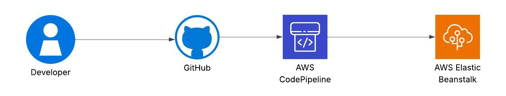
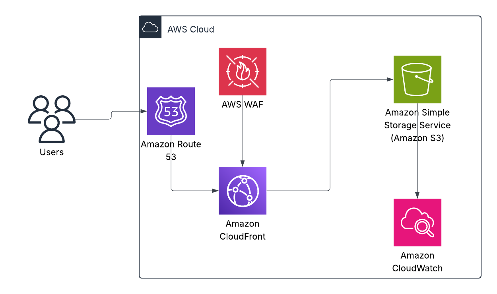
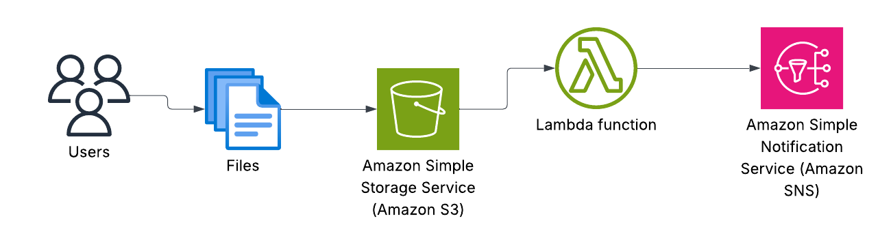
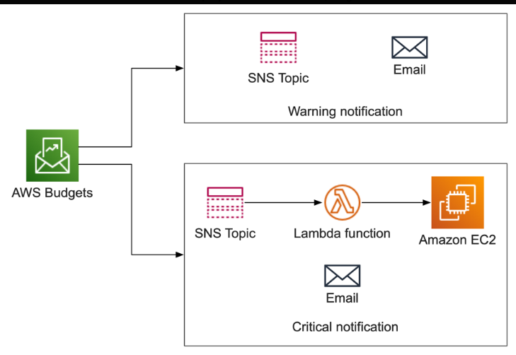

A fully automated CI/CD pipeline built with GitHub, AWS CodePipeline, and Elastic Beanstalk.
Just push your code, and watch it go live—secure, scalable, and zero manual deployment.
Perfect for startups, prototypes, and personal projects


Leveraged Amazon S3 to host a personal portfolio website with high availability and secure static content delivery using Route 53 and CloudFront.
.jpg)
Automated the provisioning of a scalable WordPress blog on a single EC2 instance using a CloudFormation template. Includes LAMP stack, DB setup, and public access.

A serverless system designed for financial and lending institutions to streamline the intake and validation of client-submitted documents. Built with Amazon S3, AWS Lambda, and Amazon SNS, this solution ensures real-time compliance alerts, automated document validation, and scalable storage — all deployed in under 10 minutes using AWS CloudFormation

This project helps you take control of your AWS spending by automatically shutting down EC2 instances when a defined budget threshold is exceeded. Built with AWS Budgets, SNS, Lambda, and CloudFormation, the system monitors costs in real time and enforces smart shutdowns without manual intervention—ensuring your cloud costs stay within limits.
This project showcases a lightweight, automated security solution built entirely on AWS Free Tier. It detects unauthorized EC2 instance launches in real-time using CloudTrail and EventBridge, then automatically responds with AWS Lambda to isolate the threat — all without human intervention.